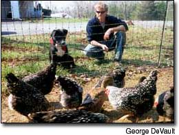
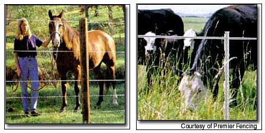
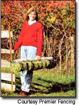
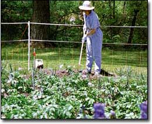

Japhy, a pup from the city, didn't know what a chicken was when he first moved to the farm, but he thought our Silver Laced Wyandottes looked interesting, so he ran right over to play with them.
He never got close to the birds. The instant his big, black, wet nose touched the electrified netting that surrounds the laying hens' pen, Japhy let out a terrified yelp. He jumped, spun clear around in mid-air and took off running in the other direction, squealing in protest and fright.
Relax, dog lovers. Mr. Japhy wasn't injured one little bit. Yes, a quick electric shock hurts. Getting hit with a few thousand volts, for even 1/3,000th of a second, does cause a bit of pain. But that's the whole idea: The shock inflicts no physical damage, but it does leave a lasting impression.
Japhy learned his lesson. He hasn't gone anywhere near the chickens again - except on a leash, to pose for his picture.
In recent years, electric fencing innovations have revolutionized some forms of livestock grazing and protection, and garden crop protection, too.
Now, effective and relatively inexpensive temporary electric fencing is available to protect everything from small animals such as chickens in the barnyard or in pastured poultry programs to larger animals such as riding hones out for weekend trail rides or involved in strip grazing.
Although some electric fences are considered permanent, much like a traditionally built fence, other styles are intended for semi-permanent or temporary applications, giving users more flexibility and economy in meeting such fencing needs titian they've ever had in the past. Modern temporary styles of electric fencing include the familiar rope lines, some tape-like styles and various sizes of mesh netting; all can be set up or taken down in a matter of minutes.
Pennsylvania farmer Brian Moyer pastures 1,400 broilers annually, using 42-inch-high electric netting with 3 1/2-inch-square openings and plastic post. Moyer says he especially likes the heavy-plastic, step-in posts, which he just pushes into the ground with his foot (or in dry times, hammers in with a rubber mallet.)
The portability of temporary electric fencing means it can he moved about according to pre-planned grazing patterns. The practice allows more intensive use of pasturelands than is possible with permanent fencing of larger areas. Aaron Silverman raises about 15,000 broilers a year in a small valley in Oregon. "Our fields are bordered by riparian zones - a river or a creek where there are nesting marsh hawks and red-tailed hawks, bobcat runs and coyote trails.
"When we started with traditional pastured poultry zones, we confined the birds to the portable enclosures at all times and moved the enclosures once, maybe twice a day. We noticed that whenever we were close to a riparian zone, we would lose birds to raccoons, 'possums and skunks, which were able to sneak under the fencing."
To establish secure outdoor pens for the birds, Silverman tested electric sheep netting, with mesh small enough to stop coyotes, but not weasels, "so we were still losing birds." Next, he tried electric poultry netting with 2-by-3-inch openings and thin, rigid-plastic verticals that keep the fence upright without corner tension braces.
"That pretty much took care of it," he says. The netted fence keeps out predators as small as rats - as long as it's moved regularly. When left in place for several weeks, such as around a greenhouse-turned-brooder house, rats eventually tunnel underneath to get at the chickens. "In the field," he says, "where we are moving the fence on a continual basis, they (the rats) respect it."
Electric fencing runs on a charger, which converts a typical 110-volt, 15-amp branch circuit, such as those you might find in a house, into a pulsed, high-voltage, low-current output. Although the potential involved may be on the order of 2,500 to 9,000 volts, the current is limited to a safe level and the actual pulse lasts only milliseconds.
According to David Hart of Underwriters Laboratories, a minimal one-second duration is mandatory between pulses to allow people who inadvertently grab onto a "hot" wire the time to let go and avoid injury. Continuous current causes the muscles to contract, making letting go difficult and potentially interfering with the function of the heart.
The fence wire is connected to a ground rod, usually just a galvanized pipe that has been driven deep into the ground. Any conductive material, such as a critter's nose or ears, that touches the wire after it has been electrified completes the circuit and - ZAP! The critter gets a short but unpleasant shock.
But gone are the days when you had to drive big metal or wooden posts into hard, rocky ground and wrestle with heavy reels of stiff wire that always wanted to go anywhere but where you wanted them to go. Permanent high-tensile electric fencing still has its place for perimeter fences, corrals and other applications where the fence is meant to last, but the new temporary styles are gaining popularity quickly on many farms and homesteads.
Most of the temporary equipment fits together easily with just a rubber mallet, screwdriver, pocketknife and a pair of pliers. And you can buy it at just about any farm supply center or from a variety of specialty companies, which often offer application and installation tips on their Web sites.
You'll need an adequate charger to control the electricity flowing to whatever type of fencing you choose. Chargers running on 110-volt AC (household) current provide maximum shocking power, so many people run an AC supply wire from their house or barn into their fields, and then connect their temporary fencing onto it wherever needed. Chargers range in price from $60 to $400.
In remote locations, battery-powered chargers are almost as effective. Batteries range in size from flashlight to deep-cycle marine, and optional solar panels will recharge them even on cloudy days, which can double a battery's life. Prices for batteries with solar chargers range from $180 to $280.
To really boost shocking power, especially on dry ground or snow, use " Pos/Neg" fencing, now available in a variety of styles.
Traditional electric fencing has a positive charge in each electrified wire. It relies on the animal making good contact with the soil in order to ground the charge and receive a shock. That doesn't always happen when soils are sandy, rocky, dry or covered with snow. Having both positive and negative (grounded) wires manufactured right in the fence increases the chance of an animal receiving a convincing shock.
Weeds also can complete the circuit when they touch the wires, sometimes shorting out the fence so it can't shock anything. Today s fence chargers can carry what the catalogs call a "heavy weed load," but don't expect to just setup an electric fence and forget it. The more you keep grass and weeds in check, the better your fence will work. Keep all electric fences free of branches, grass, weeds and debris that can short out the whole fence.
Electrified netting requires the most maintenance. When left around vegetable beds for the season, it needs to be moved periodically and the grass mowed or weed-whacked. Or place cardboard, carpet or flat stones under it to prevent weeds from growing up and touching the wire.
Regardless of what you add to your system in the way of end posts, line posts, insulators, switches (very useful when searching for a short) and other gizmos, a few basic rules apply to all electric fencing.
First, electric fences really do their job, but only if they're turned on - all of the time. That's why vegetable growers, pastured poultry producers and other users equip their fences with blinking lights or alarms to signal operational problems.
Want a good night's sleep? There is nothing more reassuring just before slipping between the sheets than glancing out a bedroom window, seeing that little twinkle of light pulsing in the far field and knowing that your defense shields are activated. of course, if the field is totally dark, there is nothing more exasperating than stomping outside through the wet grass in your bare feet to find that you've merely forgotten to plug the fence charger back in. Like the wild and domestic animals learn to avoid the fence, you soon will learn to turn it back on after you've consciously shut it down for whatever reason.
Second, making good contact with a charged fence wire is the only way animals will develop a healthy respect for the fence. Many people set a pan of feed just outside the fence to train young livestock to stay away. Baiting the fence with peanut butter or other lures also assures that predators get the message to keep out. (See "Making Big Impressions on Bambi,".)
Third, electric fence is primarily a psychological deterrent, not a physical barrier. Any animal that is hungry, scared or being chased can and probably will run right through or leap over an energized electric fence. But that can happen with traditional fencing, too.
Whatever you decide to install, get a voltage tester so you can make sure your fence is well-grounded, and pinpoint the problem when it shorts out. Mr. Japhy might agree that's a lot better than relying on your pets to tell you whether your fence is working properly.
Gallagher Power Fence
(800) 4940368
www.gallagherusa.com
Geotek
(800) 533-1680
www.geotekinc.com
Premier Fence
(800) 282-6631
www.premier1supplies.com
Kencove
(800) 536-2683
www.kencove.com
Ferris Fencing (Canada)
(250) 7579677
www.ferrisfencing.com
The fence is made of horizontal wires set 2 inches apart near the ground and vertical wires every 12 inches. To repel deer, it is set up directly under two strands of electrified tape strung on 4-foot fiberglass rods "That can't be deer fence!" visitors often exclaim when they see the two strands of hot tape. "A deer can jump right over that!"
Sure it can; the idea is to teach deer that the pain is not worth the gain. That's why electric fences are often "baited" with peanut butter or apple juice concentrate, which is guaranteed to draw a deer's sensitive nose to the wire. Just fold a few flinch squares of aluminum foil that have been smeared with peanut butter over the fence wire, or use commercially made metal pans with cotton pads and twist ties. Just the white-and-black coloring of many electric fence ropes or tapes put deer on guard; wind that makes the fencing bounce, hum and even buzz loudly spooks deer even more. - George DeVault
Mother Earth News
|
 The easy way to keep your livestock in and predators out.By George DeVault |
 Permanent electric fencing, left, and semi-permanent, right, are most effective in applications involving large livestock. Temporary electric fencing and netting, like that shown at the top of the page, work well for smaller animals, or very short-term applications for large livestock. |
 Electric Mesh fencing is as easy to transport as it is to install |
|
 On our Pennsylvania farm, we use 22-inch-high GardenNet from Premier Fence Company to keep deer, groundhogs, raccoons and rabbits out of our organic market garden. |
|
|